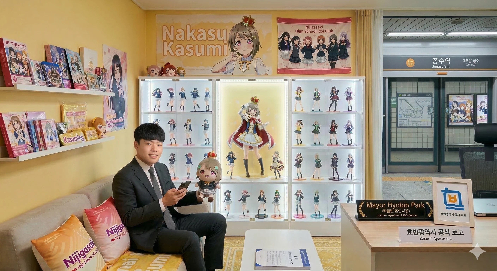

- 1. 개요
- 2. 상세
- 2.1. 권력 남용의 오해와 진실 (2015년 준공의 기적)
- 2.2. 우주가 돕는 듀얼 코어 성지
- 3. 단지 특징
- 3.1. 별 모양 외관과 비밀의 베이커리
- 3.2. 철통 보안과 밴드 라이브룸
- 3.3. 공개된 사저 내부 (광기의 셀프 인테리어)
- 4. 여담 (광기의 워커홀릭)
- 5. 교통
1. 개요
- 세금 낭비 논란이 터지자 2015년 건축물대장을 흔들며 절규하는 박효빈 시장
효빈광역시 북구 중수4동(중수동)에 위치한 12개 동 규모의 대단지 아파트이자, 현직 효빈광역시장인 박효빈 시장의 사저(私邸)가 있는 곳. 외관 중 12개 동의 단지 배치가 붉은 별(★) 모양을 띠고 이름은 '카스미', 주소는 '중수동'이라는 비현실적인 덕업일치의 조건을 갖추고 있어, 흔히 오타쿠 시장이 권력을 남용해 시 예산으로 초호화 주상복합을 지은 만악의 근원(?)으로 오해받는다. 하지만 실상은 시장이 정계에 입문하기도 훨씬 전인 2015년에 완공되어 있던 12개 동짜리 일반 아파트에 덕후 시장이 제 발로 찾아가 입주한 '우주가 점지해 준 성지'이다. 시장이 거주하는 곳 역시 펜트하우스가 아닌 일반 대형 평수 세대일 뿐이다.
2. 상세
2.1. 권력 남용의 오해와 진실 (2015년 준공의 기적)
2022년 박효빈 시장이 당선된 직후, 북구 중수동에 위치한 붉고 화려한 아파트가 '시장 사저'로 지정되자 시민들과 지역 언론은 발칵 뒤집혔다. "시장님, 대체 시 예산으로 무슨 덕질을 벌이신 겁니까?", "이름이 중수카스미 아파트라니 이건 선 넘었다", "초호화 주상복합 펜트하우스에 사는 오타쿠 시장"이라며 십자포화가 쏟아진 것이다.
하지만 박 시장은 긴급 기자회견을 열고 2015년도 건축물대장을 공개하며 억울함을 호소했다. 이 아파트는 박 시장이 대학에서 폐기 도시락을 먹으며 알바를 하던 2015년에 일반 민간 건설사인 '효빈건설'이 12개 동 규모로 분양했던 지극히 평범한(?) 일반 민영 대단지 아파트였다. 이름인 '카스미' 역시 '아름답고 빼어난 미관'을 자랑한다는 뜻의 한자어 브랜드 가수미(佳秀美)였을 뿐이며, 어쩌다 보니 발음이 카스미가 된 것뿐이었다. 심지어 시장 본인이 거주하는 곳도 펜트하우스가 아니라 은행 대출을 껴서 매입한 일반 층의 대형 평수 세대였다.
2.2. 우주가 돕는 듀얼 코어 성지
비록 시 예산으로 지은 초호화 펜트하우스는 아니었지만, 이 아파트는 박효빈 시장에게 우연이 겹치고 겹쳐 만들어진 완벽한 듀얼 코어 성지 그 자체였다.
행정구역상 이 아파트의 주소는 북구 중수동(中須洞)이다. 나카스 카스미(니지가사키)의 성씨인 '나카스(中須)'와 한자까지 완벽하게 일치한다! 박 시장은 시장에 당선되어 관사를 알아보던 중 이 소름 돋는 우연을 발견하고는 전율하며 뒤도 안 돌아보고 사비를 털어 이 아파트의 세대를 매입했다.
거기에 더해, 이 아파트는 항공뷰로 내려다보면 우연찮게도 12개 동의 건물 배치가 완벽한 붉은 별 모양(★)을 띠고 있었다. 박 시장의 또 다른 최애인 토야마 카스미 (Poppin'Party)의 상징인 붉은 별(랜덤 스타)과 완벽하게 매칭된 것이다. 결과적으로 박 시장은 숨만 쉬어도 두 명의 카스미를 동시에 덕질할 수 있는 절대 영역을 획득하게 되었다.
3. 단지 특징
3.1. 별 모양 외관과 비밀의 베이커리
원래 건축가가 단순히 일조권과 독특한 조경을 위해 12개 동을 별 모양으로 배치했던 이 아파트는, 박 시장이 입주한 뒤 진정한 생명력을 얻었다. 주상복합 펜트하우스가 아닌 일반 아파트임에도 불구하고, 박 시장은 본인 세대의 방 하나를 아예 빵을 굽고 디저트를 만들 수 있는 비밀 베이커리 룸(일명 '카스밍 박스')으로 개조해버렸다. 여기서 구운 빵은 치카리코 오시인 비서실장이 강제로 시식한다고 한다.
3.2. 철통 보안과 밴드 라이브룸
명색이 현직 광역시장의 사저가 위치한 단지인 만큼 시장이 거주하는 동 입구에는 청원경찰들이 24시간 철통 보안을 유지하고 있다. 실제로 사저 내부에는 완벽한 방음 시설을 갖춘 합주실이 있으며, 심야마다 일렉 기타 소리(Yes! BanG_Dream! 전주곡)가 미세하게 새어 나온다는 이웃 주민들의 제보가 끊이지 않는다. 시장님 층간소음 조심하세요
3.3. 공개된 사저 내부 (광기의 셀프 인테리어)
최근 박효빈 시장이 SNS를 통해 직접 공개한 사저 내부와 개인 집무실의 모습은 시민들을 경악하게 만들었다. 인테리어 업자나 코디네이터의 손을 빌린 것이 아니라, 시장 본인이 직접 퇴근 후 밤을 새워가며 일반 아파트를 굿즈로 세팅하고 개조한 결과물이라고 한다. 도대체 저 엄청난 물량을 언제 다 세팅한 건지 미스터리다.

▲ 사저 내부 (광기의 굿즈룸)
온 사방이 카스미(토야마/나카스)를 비롯한 최애캐들의 태피스트리, 포스터, 인형으로 빈틈없이 도배되어 있다. 방 전체를 감싸는 강렬한 붉은색과 파스텔 옐로우 조명은 시장님이 손수 설치한 스마트 LED 시스템이다. 침대 위를 떡하니 점령한 다키마쿠라들과 천장까지 닿을 듯한 굿즈 탑을 보면, 이곳이 인구 300만 광역시장의 엄숙한 관저라기보다는 아키하바라 뒷골목의 초대형 애니메이션 굿즈샵 창고를 방불케 한다. 이게 어떻게 평범한 30평대 아파트 안방입니까. 저기서 잠이 오긴 합니까.

▲ 사저 내 개인 집무실
다중 모니터가 세팅된 거대한 데스크와 최고급 게이밍 의자, 그리고 벽면을 빽빽하게 채운 피규어 전용 장식장이 압권이다. 장식장마다 개별 핀조명이 설치되어 피규어들을 영롱하게 비추고 있다. 탁 트인 대형 통창 너머로 효빈시 북구의 화려한 야경이 내려다보이는 가운데, 시장은 이곳에서 시정 결재 서류를 산더미처럼 쌓아놓고 검토함과 동시에 모니터 한구석으로는 성우 라이브와 버튜버 방송을 실시간으로 모니터링하는 극한의 멀티태스킹 광기를 보여준다. 성공한 덕후의 궁극적인 로망 그 자체다.
4. 여담 (광기의 워커홀릭)
- 일에 미친 시장님 (수면 시간 3시간): 사저 내부의 저 엄청난 굿즈량과 매일같이 쏟아지는 덕업일치 행보 때문에 타 지역 사람들은 "저 시장은 맨날 애니만 보고 노는 것 아니냐"는 오해를 하기도 한다. 하지만 실상 박효빈 시장은 효빈시청 공무원들조차 공포에 떨며 혀를 내두를 정도의 지독한 워커홀릭이다. 15학번 시절 쓰리잡을 뛰며 폐기 도시락을 먹던 흙수저 생존 본능이 뼛속까지 각인되어 있어, 새벽 첫차로 출근해 막차 시간까지 현장을 순찰하고 결재를 처리한다. 집에 돌아와서도 사저 내 집무실에서 새벽 3시까지 시정 업무와 덕질을 동시에 소화하며, 하루 수면 시간은 3~4시간 남짓이라고 한다. 덕분에 오히려 대부분의 시민들과 참모진이 "시장님, 제발 굿즈 사러 아키하바라 갈 특별 휴가라도 드릴 테니 눈 좀 붙이세요. 그러다 진짜 과로사하십니다!"라며 진심으로 시장의 건강을 걱정하고 있는 전무후무한 기현상이 벌어지고 있다. 덕질할 시간은 수면 시간을 깎아서 만든다.
- 사저 심야 회의의 공포: 긴급 재난 상황이나 중요 현안이 터지면 간부 공무원들이 새벽에 시장 사저로 긴급 호출되는 경우가 종종 있다. 이때 간부들이 가장 두려워하는 것은 시장의 불호령이 아니라, "실수로 1/1 스케일 한정판 피규어를 치거나 귀하신 아크릴 스탠드를 밟아 부러뜨리는 것"이라고 한다. 결재판을 내밀 공간이 없어서 미소녀 장패드 위에 결재 서류를 올려놓고 서명을 받는다는 눈물겨운 증언이 블라인드에 올라온 적이 있다.
- 광기의 6호선 출근길: 박효빈 시장은 매일 아침 관용차를 마다하고 중수역에서 시청역까지 6호선 지옥철을 타고 출퇴근한다. 표면적인 명분은 "시민들의 생생한 목소리와 땀내 나는 민원을 직접 듣기 위함"이라고 포장되어 있지만, 실상은 출퇴근 시간 내내 이어폰을 꽂고 뱅드림/럽라 메들리를 들으며 덕력을 충전하는 시간이다. 가끔 6호선 만원 지하철에서 시장님과 눈이 마주친 시민이 가방에 매달린 애니 굿즈를 들키기라도 하면, 시장님이 득달같이 다가와 시정 민원 청취는 내팽개치고 "오, 훌륭한 오시(최애)를 두셨군요. 이번 가챠 대박 나시길 기원합니다. 아, 혹시 이번 주말 중수역 스탬프 랠리는 찍으셨습니까?"라며 심연의 덕토크를 시전해 시민들을 공포(?)에 떨게 만든다고 한다. 도망쳐, 저 사람은 시장의 탈을 쓴 찐오타쿠야
- 내돈내산의 철칙: 저 무시무시한 펜트하우스급 인테리어와 수천만 원어치 굿즈 매입 비용에 시 예산은 단 1원도 들어가지 않았다. 전액 시장의 개인 사비(장관급 월급 + 은행 대출 영끌)로 충당했다. 한때 야당에서 "시장 관사에 세금을 낭비한다"고 공격하려다, 박 시장이 "제 월급 통장에서 직접 긁은 영수증과 일본 직구 배송 대행지 결제 내역"을 뭉텅이로 공개해버려 야당 대변인이 꿀 먹은 벙어리가 된 사건은 효빈시 정치권의 전설로 남아있다.
- 엘리베이터가 단 한 대뿐인데, 문이 열릴 땐 "무테키급 빌리버!", 문이 닫힐 땐 "반짝반짝 도키도키!"가 번갈아 나오도록 합법적으로 개조해버렸다.
5. 교통
북구 중수동의 최중심 행정 타운 한복판에 똬리를 틀고 있어, 사실상 효빈시 북구의 모든 핵심 교통망과 인프라를 독식하고 있는 형태다. 당장 길만 건너면 효빈고등법원과 검찰청이 떡하니 버티고 있으며, 대형 마트와 복합 쇼핑몰까지 도보권에 널려 있어 사저로서 이보다 완벽할 수 없는 입지를 자랑한다. 이쯤 되면 시장님이 퇴근 후 굿즈 사러 가기 편하려고 여기 자리 잡았다는 합리적 의심이 들 수밖에 없다. 심지어 지하철 환승역과 시내버스 주요 노선들이 아파트 12개 동 전체를 빙 둘러싸고 있어, 분초를 다투며 일하는 워커홀릭 박효빈 시장에게는 그야말로 최적의 베이스캠프 역할을 톡톡히 수행하고 있다.